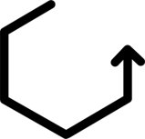

Convex hull for a polygon and an external point
About
Algorithm
Computational geometry project
Requirement:
Given a convex polygon and a point outside it, find the convex hull of all the points.
Team:
Andronic Alexandra
Cirstea Madalina
Cirstea Natasa
Puiu Ana Maria
How does the algorithm work?
Sort the points of the polygon in trigonometric sense.
Find the polygon's closest point to the external point.
The points are traversed in trigonometric sense to find the upper edge.
The points are traversed in trigonometric sense to find the lower edge.
In the new set of points we add the outer point, the upper edge, the lower edge and the points between them in the trigonometric sense.
How do I run the program?
Create a session.
Add the points of the polygon.
Add the the external point.
Draw the polygon.
Click Play
New session
Add points
ExternalPoint
Draw polygon

Start